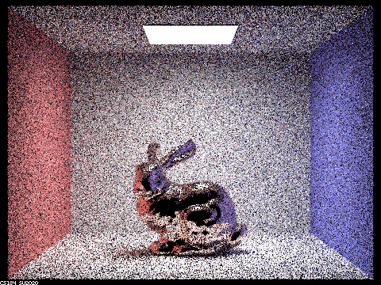

Spring 2023, Yunhao Cao and Yuqi Zhai
In this project, we further extended our rendered from Project 3-1 by adding support for more materials, including diffuse, glass, refractive, and microfacet materials.
In this part, we added support for mirror and glass materials. To achieve this, we first implemented a reflect function and returns the reflected ray about the normal with respect to the output ray (since we're doing inverse ray tracing). Then we also implemented a refraction function based on Snell's law.
Parameters:
| Parameter | Value |
|---|---|
-t |
8 |
-s |
256 |
-l |
4 |
-r |
480 360 |
| input | dae/sky/CBspheres.dae |
m = 0 |
m=1 |
|---|---|
| since only up to 0 bounces, so the only area that is lit is the light source. | By allowing up to 1 bounces, we only have objects that are directly illuminated by the light source. |
In both
m = 0andm = 1cases, there is nothing new as what we have implemented in Project 3-1.
m = 2 |
m = 3 |
|---|---|
At m = 2, we start to see some interesting multibounce effects that appear only after the implementation of this part. The left mirror material is reflecting the scene that is in front of it, including the black ball on its right, the light above it, and the red and blue walls on both sides. Those effects need 2 bounces of light. However, it is obvious that the right, glass material, ball is still black, since it needs 2 bounces of light to transmit through the glass ball, but it needs one more bounce to be illuminated. |
Here we have m = 3, and we start to see the right glass ball lit up. With 3 bounces of light, the light transmitted through the glass ball could be visible in the camera with the additional bounce to the light. This is also a new multibounce effect with the implementation of project 3-2. |
m = 4 |
|---|
Now we have m = 4, and we notice the refracted light on the wall next to the glass ball, a reflection from the lit-up shadow for the glass ball in the depth-3 image. |
m = 5 |
m = 100 |
|---|---|
Lastly, we have m = 5 and m = 100. It seems to have no big difference from m = 4, just a bit brighter in all aspects.
In this part, we added support for microfacet materials. To achieve this, we first implemented a Fresnel function for the Microfacet materials. Then we also implemented a microfacet distribution function based on the Beckmann model.
CBDragon_microfacet_au.daeParameters:
| Parameter | Value |
|---|---|
-t |
8 |
-s |
512 |
-l |
4 |
-m |
5 |
-r |
480 360 |
-a |
64 0.05 |
alpha = 0.005 |
alpha = 0.05 |
|---|---|
alpha = 0.25 |
alpha = 0.5 |
|---|---|
Decreasing the alpha value decreases the roughness of the material, and the dragon's skin becomes smoother. The dragon's skin is more reflective when alpha is smaller, and the dragon's skin is more transparent when alpha is larger.
CBbunny_microfacet_cu.dae| Parameter | Value |
|---|---|
-t |
8 |
-s |
64 |
-l |
1 |
-m |
5 |
-r |
480 360 |
-a |
64 0.05 (Note that since batch size is 64, adaptive sampling is effectively disabled) |
-H (Hemisphere Sampling) |
Importance Sampling |
|---|---|
|  |
It is clearly that using importance sampling decreases noise significantly without affecting the computation time.
Element: Chromium(CR)
Material Properties:
| Color(Wavelength) | - Refractive index | - Extinction coefficient |
|---|---|---|
| Red(614nm) | 0.21646 | 3.30 |
| Green(549nm) | 0.42833 | 3.3300 |
| Blue(466nm) | 1.3284 | 3.2150 |
Parameters:
| Parameter | Value |
|---|---|
-t |
8 |
-s |
512 |
-l |
4 |
-m |
5 |
-r |
480 360 |
-a |
64 0.05 |
Output:
alpha = 0.2 |
alpha = 0.5 |
|---|---|
Looks pretty cool!
Webpage hosted at quantumcookie.xyz/Opensourced-Study-Notes-Berkeley/CS184/proj3-2-pathtracer-writeup/